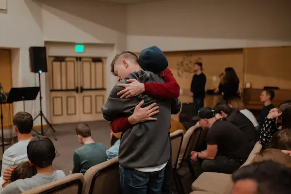

Nossa Missão: Acolher o Luto
A Fio de Aurora é dedicada a oferecer apoio, empatia e esperança a quem vive o luto. Atuamos com grupos de acolhimento e escuta solidária, transformando a dor em um recomeço de vida.
A Fio de Aurora é dedicada a oferecer apoio, empatia e esperança a quem vive o luto. Atuamos com grupos de acolhimento e escuta solidária, transformando a dor em um recomeço de vida.
Somos um abraço coletivo. Saiba como se tornar um voluntário acolhedor em nossos encontros terapêuticos. Veja como sua doação se converte em amparo material e emocional para famílias em situação de vulnerabilidade.
Valorizamos a comunicação direta e a clareza total. Para informações sobre nossos grupos, agendamentos ou parcerias, entre em contato. Email: contato@fioaurora.org. Telefone: (11) 0800-7777.